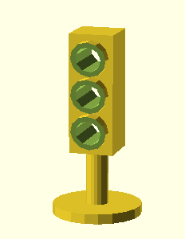

COLL 142 - Week 06
3D Print-ciples
Salvatore "Sal" Testa /@saltesta14
with special guest Rahul Roy/@PlasticRamen

What is 3D printing

3 Main Types of 3D Printing
- Fused Deposition Modeling (FDM)
- Stereolithography (SLA)
- Selective Laser Sintering (SLS)
What are we doing today?
How to 3D with Rahul
Test out Traffic Light Code
Arduino Code and the Processing Code